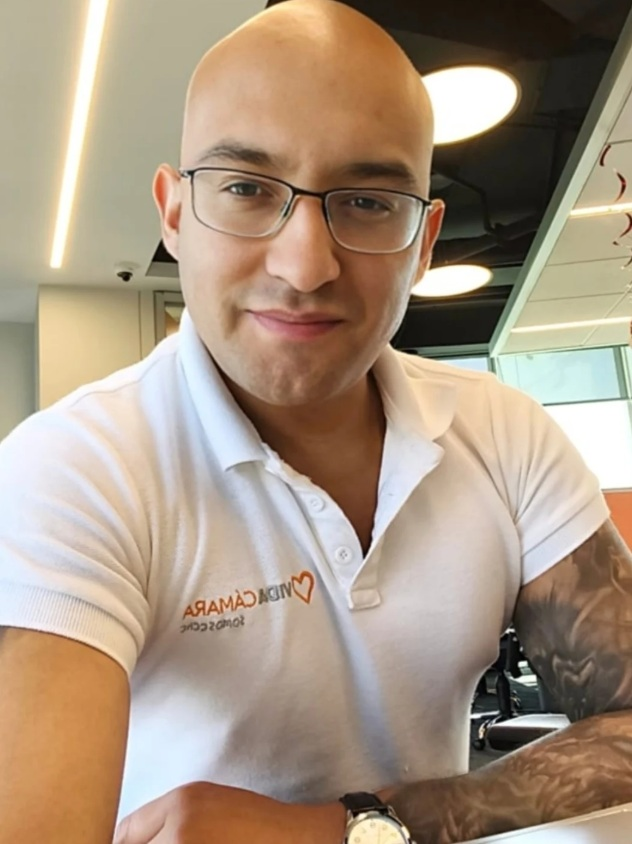

Perfil profesional
Sobre mí
Profesional en desarrollo dentro del área de ciberseguridad, orientado a la construcción de experiencia práctica en análisis de vulnerabilidades, seguridad ofensiva, monitoreo y defensa de entornos tecnológicos. Actualmente enfocado en fortalecer competencias técnicas mediante laboratorios, proyectos aplicados y documentación estructurada de hallazgos y procesos.
Mi objetivo es consolidarme en la industria aportando una combinación de criterio analítico, disciplina técnica y aprendizaje continuo, construyendo una base sólida desde la práctica real y el estudio constante.
Este portafolio reúne parte de mi trabajo, evidencias técnicas y proyectos en desarrollo, con el objetivo de reflejar mi evolución profesional y mi enfoque en seguridad informática.